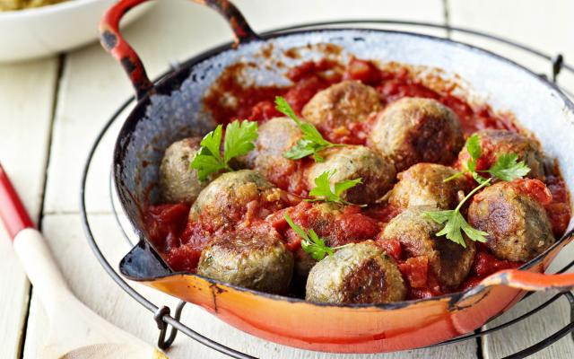

Vegetarische balletjes in tomatensaus

Ingrediënten
- 200 gr linzen
- 1 kg tomaten
- 1 uitje
- 2 takjes tijm
- 1 blaadje laurier
- 6 el brood (fijn gemalen)
- 3 uien (gesnipperd)
- 2 teentjes knoflook (geperst)
- 2 takjes verse rozemarijn
- 1 bosje peterselie
- 3 el bloem
- suiker
- peper
- zout
- olie
Bereiding
- Pel en ontpit de tomaten en snij ze in stukjes. Bind de tijm, rozemarijn en laurier samen tot een kruidentuiltje.
- Fruit 2 gesnipperde uien en de knoflook glazig. Roer er de tomatenblokjes onder en laat meestoven. Kruid met peper, zout en suiker. Laat 1 uur op een zacht vuurtje pruttelen. Schep het kruidentuiltje eruit.
- Kook de linzen volgens de aanwijzing op de verpakking. Giet af en hou 4 eetlepels apart.
- Pureer de linzen samen met 1 gesnipperde ui en de peterselie in een keukenrobot. Voeg het broodkruim en bloem toe en breng op smaak met peper en zout. Zorg dat het deeg vast genoeg is om er balletjes van te maken.
- Neem telkens een eetlepel deeg, duw er een paar overgebleven linzen in en rol het tussen je handpalmen tot een balletje. Bak de balletjes. Laat ze even in de tomatensaus meesudderen, garneer met peterselie en serveer.